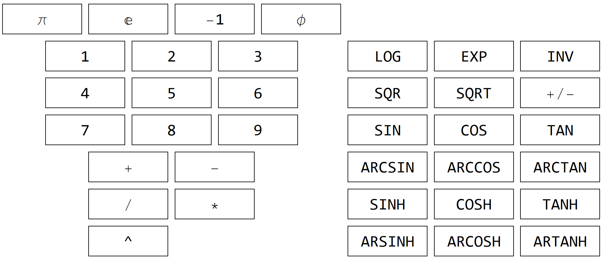

Enter the number to identify or approximate:
=
RPN:
Mathematica:
Search use the "standard" 36-button scientific RPN calculator.

Enter any real number to find out, if some sequence of the above buttons could re-discover it. Use floating-point format, e.g:
User now can use slider to change default code length of 5, with runtime of roughly 1 second. Every step up increase search time 36x, so be patient. Search is performed using single thread and real numbers. To use longer sequences, custom calculators, complex numbers, recognition of functions and massively multi-threaded search, see native C code on GitHub or contact author at andrzej.odrzywolek@uj.edu.pl. ENJOY!
UPDATED: 2024-02-24 12:56